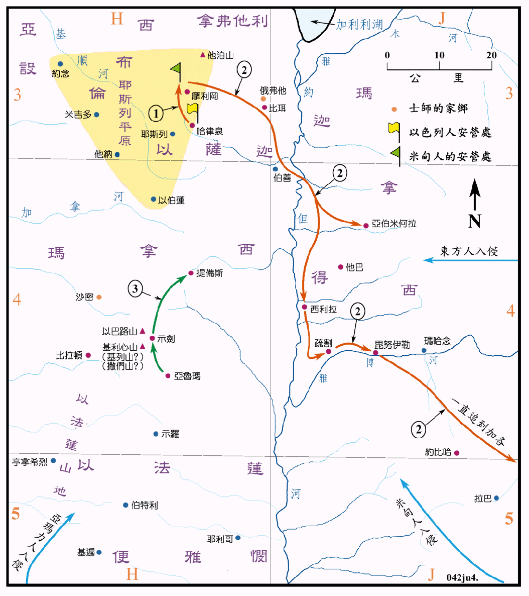

基甸 (1162～1122BC)
亚比米勒 (1122～1119BC)
陀拉 (1119～1096BC)

行动线说明
| 序号 | 圣经 | 说明 |
|---|---|---|
| 士6:1-35 | 米甸压制以色列人七年，耶和华召基甸出来拯救，他召集玛拿西、亚设、西布伦和拿弗他利支派的人来跟从他，共约有三万二千人。 | |
| 士7:1-8 | 基甸在哈律泉旁安营，他选了三百人，将其他的人遣回。 | |
| 1 | 士7:16-21 | 基甸攻打米甸人，米甸人大败。 |
| 2 | 士7:21-8:12 | 米甸人逃窜，直到加各。 |
| 3 | 士9章 | 亚比米勒为患三年。 |
| 士10:1-2 | 沙密的陀拉作以色列人的士师二十三年。 |
当时以色列人被米甸人所压制。在以色列人撒种以后，又有亚玛力人和东方人来侵扰，米甸人是来自阿卡巴湾的东岸，亚玛力人是来自加低斯以南的地区，东方人大概是以死海以东约180公里的加各为中心的游牧民族。当基甸当士师时，他们集合安营在耶斯列平原，人数极多，基甸原有三万二千男丁，他只从中选出三百人来作战，并将其他的人遣回。当基甸以极少的人突袭米甸人时，神使米甸人自相残杀而溃败，逃往自己的老巢，基甸追赶他们过了约但河，一直追杀到加各，全程超过200公里，这在山区和旷野中，的确是非常艰苦的事。
基甸的庶子亚比米勒，他的母亲是示剑人，故有一半迦南人的血统，虽说他管理了以色列三年，实际上是作乱，而他活动的范围也很有限，最后他在提备斯被杀。